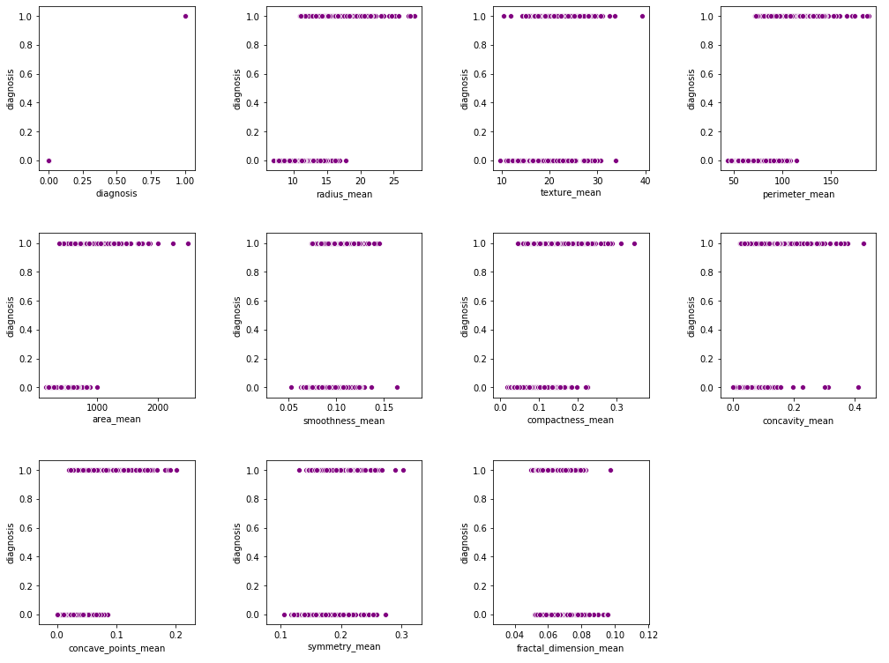

Introduction
Motivation
The second major cause of women's death is breast cancer (after lung cancer) [1]. 246,660 of women's new cases of invasive breast cancer are expected to be diagnosed in the US during 2016 and 40,450 of women’s death is estimated [2]. Breast cancer represents about 12% of all new cancer cases and 25% of all cancers in women [3].
On the other hand, advancements in machine learning have simplified the process of cancer identification, enabling doctors to make a diagnosis before the onset of common symptoms [2]. As more sophisticated tools are developed, the diagnosis of breast cancer can be made more accurately[3]. A machine learning based diagnosis of malignant breast cancer cells can allow doctors to make a more accurate diagnosis of the patients based on the tissue cells. This reduces both the cost of such medical tests error rate in identifying breast cancer in patients. This ultimately saves more lives.
Therefore in this project, we aim to use a combination of unsupervised and supervised learning to weigh different features of a digitized image of a fine needle aspirate (FNA) of a breast mass, which describe characteristics of the cell nuclei present in the image, in order to accurately predict if the cell is indeed malignant. This eventually assist doctors in the diagnosis of breast cancer in patients. Ultimately, we hope to use the fitted model as baseline diagnostic tools for patients. The analysis below outlines each of the methods used, leading up to our final recommendations.
Dataset
The UCI Breast Cancer Dataset [5] is a public data set that has its features computed from a digitized image of a breast mass. This data set covers the relationship between the malignancy of a cancer cell and its physical properties. The dataset consists of 10 features, 1 binary label, and 569 training examples.
Ten real-valued features are computed for each cell nucleus taken from the breast tissue:
- radius (mean of distances from center to points on the perimeter)
- texture (standard deviation of gray-scale values)
- perimeter
- area
- smoothness (local variation in radius lengths)
- compactness (perimeter^2 / area - 1.0)
- concavity (severity of concave portions of the contour)
- concave points (number of concave portions of the contour)
- symmetry
- fractal dimension ("coastline approximation" - 1)
Correlation Matrix
In general, we know that a correlation coefficient of more than (absolute value of) 0.7 may suggest multicollinearity between features. After plotting the correlation matrix, we can see that some of the features are highly correlated. The correlation coefficient is in the value of 0.8 to 1.0. Since some of the features are related to one another physically (e.g. area, radius, and perimeter), it is unsurprising to see such a result of the correlation matrix.
Feature Distributions
Since all ten features are continuous, we plotted their histogram graphs to investigate how these features are distributed. Looking at the distributions of all ten continuous features, we can see that they are mostly normally distributed. Some of the features are skewed to the left, while some are skewed to the right.
Kernel Density Estimation
We also use Kernel Density Estimation to estimate the pdf of the continuous variables. The result reflects what we had before as they all seem to be normally distributed.
K-Means Algorithm
To figure out what subset of the features we should run the K-Means algorithm on, we first plotted the data based by its features. The data is shown with each of the 10 different features against the condition - show as 0 if breast tissue cell is benign and 1 if it is malignant.
The first method looked rather inconclusive and did not provide valuable insight. Therefore, we explored the second method: plot the data points with each of the features against one another to see which pair gives us interesting plots. Each of these data points is shown as purple if the cell is benign or red if the cell is malignant. After looking at these graphs, we find that all the attribute pairs are, in fact, worth exploring. We therefore decided to run the K-means algorithm on all of them.
After running the K-means algorithms on all 45 pairs of attribute relationships, we graphed the number of clusters against the distortion value in an attempt to use the elbow method to see the optimal number of clusters to use for each pair. The motivation here was to understand the spread of the data in the dataset but this experiment did not provide valuable insights. It might be more useful with a larger dataset, where sample sizes are at least more than a few thousand.
Principle Component Analysis
Through PCA analysis, we aimed to find out an optimal number of attributes that would yield good results for our later algorithms. Based on the graph, there seems to be a plateau between 6 and 8 that suggests the optimal number of features. It could possibly be explained by the previous insight that some of the features are correlated with one another physically and thus might not be useful to include them.
Random Forest
To train and test our data, we chose a random 33% split between training and test data. Producing a random forest without any dimension reduction, the accuracy was very high – 94.6%.
Next, we wanted to see how the prediction accuracy of our Random Forest would be affected by dimensional reduction. We calculated the feature importance of each feature and ranked them. We then fit the model using only the top 5 features. This produced a lower accuracy of 92.5%. Thus, the dimensional reduction is not useful in this case.
Logistic Regression
Next, we trained a logistic regression model which gave us an accuracy of 0.894 or 89.4% accuracy.
Naives Bay
Last but not least, we applied Naives Bay algorithm to the dataset and found a low prediction accuracy of 0.665, compared to other models. This low accuracy rate could come from the false assumption in this model that all the features are independent of each other in order to interpret each features' conditional probability in contributing to the presence of cancer. However, we know from earlier analysis that some of the features are not in fact independent of one another.
Conclusion
Discussion
| Model | Accuracy |
|---|---|
| Random Forest | 0.94149 |
| Logistics Regression | 0.89362 |
| Naives Bayes | 0.66489 |
Based on the values we see in the table, the method that yields the best and most accurate predictions was random forest. Similarly, the prediction accuracy of logistic regression comes close. Both results could be due to the possibly linear relationship from some of the features~~. This also explains why Naives Baye did not work well for this dataset since the independence assumption cannot hold in this case.
Future Steps
In the future, we hope to have a larger data set with more training examples to prevent overfitting when training our models. This lack of data could account for the less-than-optimal accuracy even in our best model.
The future of breast cancer diagnosis is bright – the accuracy will only improve. Even with few hundred of training examples, our methods show multiple methods to make a good diagnosis of patients based on their breast tissue cells. By increasing the accuracy of these machine learning models and fine-tuning certain hyperparameters, we believe the breast cancer can be caught earlier and tackled better worldwide.
References
- Asri, H., Mousannif, H., Al Moatassime, H. and Noel, T., 2016. Using machine learning algorithms for breast cancer risk prediction and diagnosis. Procedia Computer Science, 83, pp.1064-1069.
- Key, T., Verkasalo, P. and Banks, E., 2001. Epidemiology of breast cancer. The Lancet Oncology, 2(3), pp.133-140.
- Liu, H., Zhang, R., Luan, F., Yao, X., Liu, M., Hu, Z. and Fan, B., 2003. Diagnosing Breast Cancer Based on Support Vector Machines. ChemInform, 34(34).
- Jerez, J., Molina, I., García-Laencina, P., Alba, E., Ribelles, N., Martín, M. and Franco, L., 2010. Missing data imputation using statistical and machine learning methods in a real breast cancer problem. Artificial Intelligence in Medicine, 50(2), pp.105-115.
- Kaggle.com. 2020. Breast Cancer Wisconsin (Diagnostic) Data Set. [online] Available at: